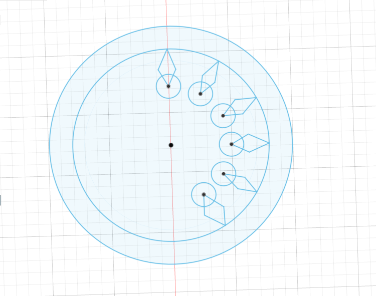
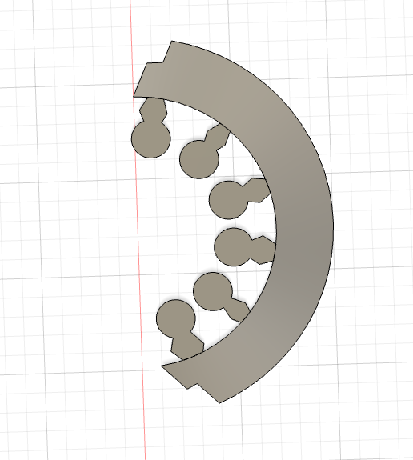
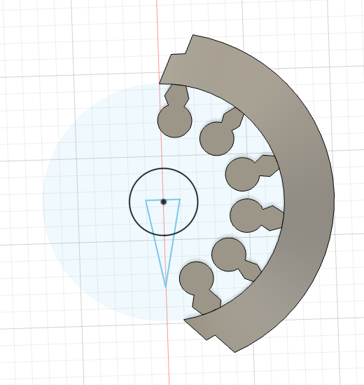
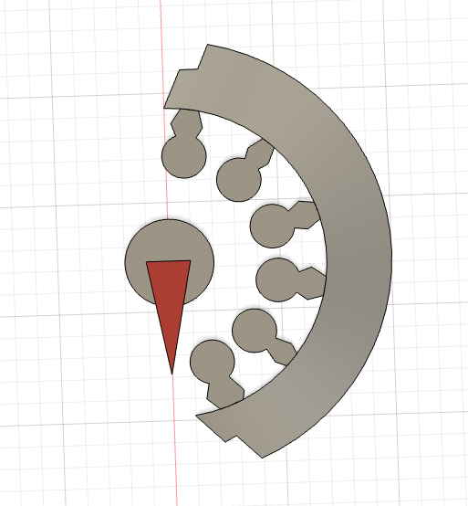
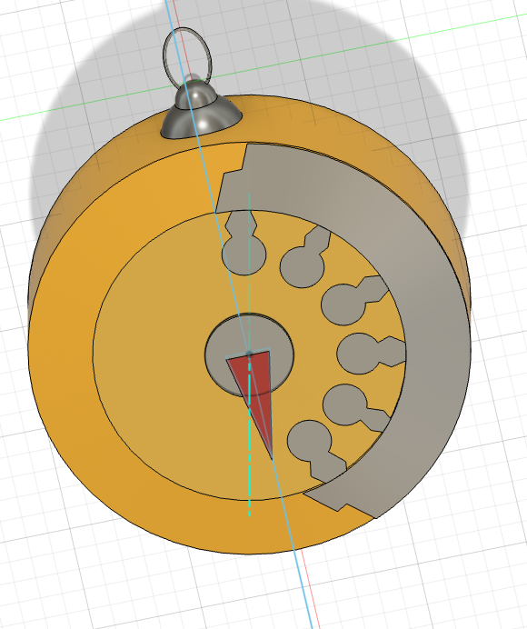
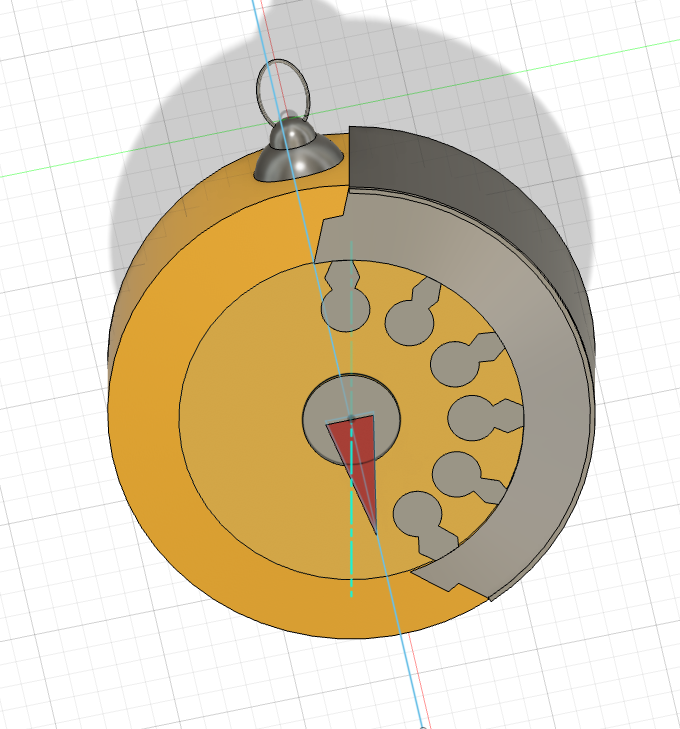
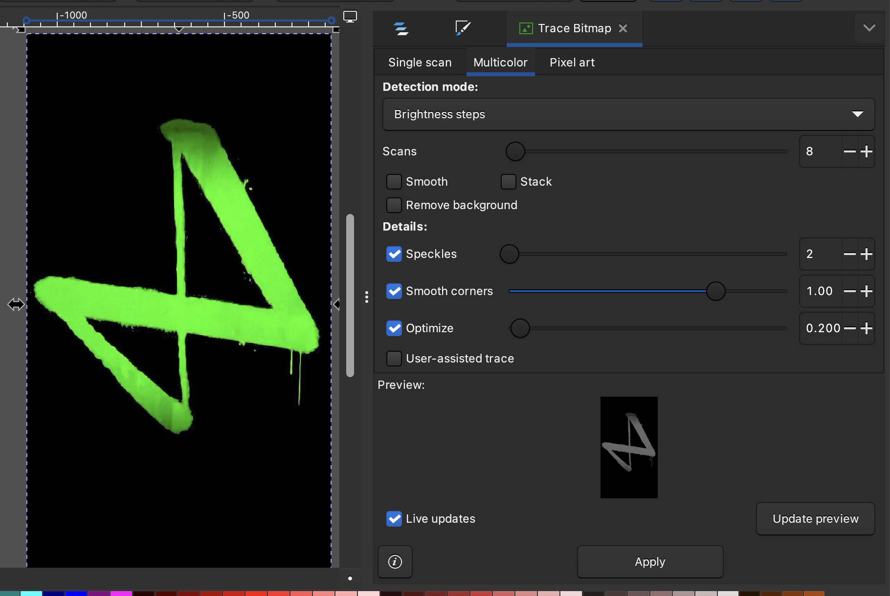
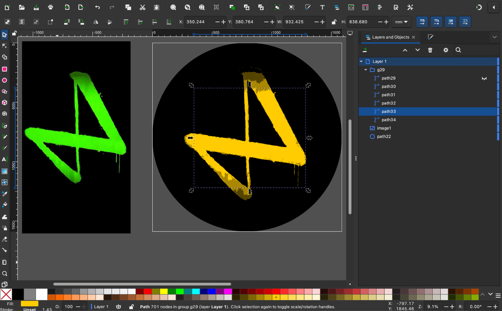

I started by sketching the dials of the stop watch. Using the shortcut for entering measurements (I) makes it easier to sketch accurately.

I then extruded the design to a thickness of 0.01mm and sketched a profile to cut away part of the ring.

I sketched the needle of the stopwatch with a disc under it.

And extruded the disc at an offset of 1mm and the needle at an offset of 2mm. Thickness for both elements were set at 0.01mm.

I sketched the body of the stop watch and extruded it downwards by 30mm. I changed the appearance of the body to yellow metallic paint.

I selected the outer edge of the watch dial and extruded it downwards at an offset of 1mm and thickness 0.01mm.

Finally, I rendered the model to get a photorealistic image of the watch.

I have embedded the model below
2D Design Tools
InkScape (Vector tool)
Imported the Firelights logo, converted it into vector by using Trace Bitmap option. Since this was a colour image, I used the multicolour option and the tool generated vector paths for various shades of colour.

The output was in greyscale and I selected each path to recolour it in yellow. Since the tool differentiates paths based on colour shades, there will be defined boundaries between the colour shades in different paths.

ProCreate (Raster)
Used 4 screenshots to trace the movement pattern of a blue whale. Combined the patterns using the animate option to create an animation of whale swimming.
Note: Creating each element in different layers makes it easier to edit them later.

Lightroom (Raster)
Used Lightroom to edit the light and colour values of an image.